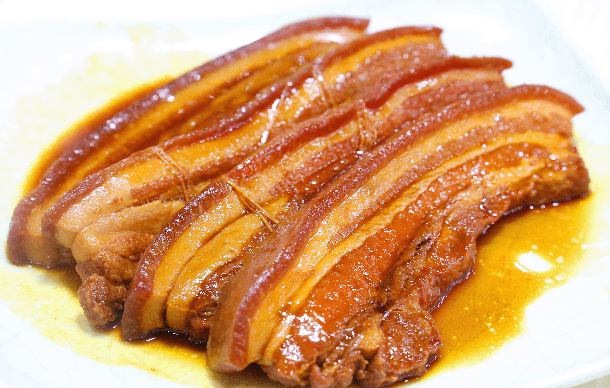
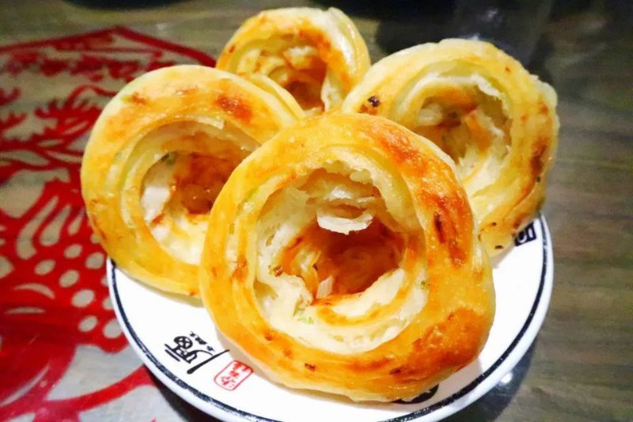
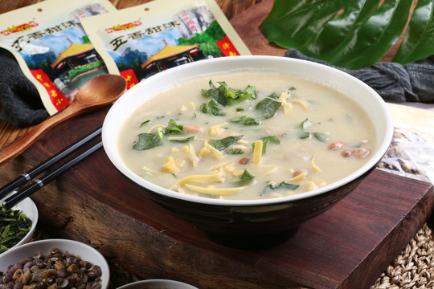

Braised pork is one of the most iconic dishes in Jinan. It is slow-cooked until tender, rich but not greasy, with a deep soy flavor.
It represents the hearty and authentic taste of Shandong cuisine, loved by both locals and visitors.

A traditional crispy snack with a spiral shape. It is crispy on the outside, soft inside, with a strong green onion aroma.
It is a popular breakfast and street food in Jinan for hundreds of years.

A salty porridge-style breakfast made with grains, sesame oil, and vegetables. Despite its name, it is not sweet.
It is a unique and healthy traditional drink that shows the food culture of old Jinan.
Jinan is an important birthplace of Lu Cuisine, one of the eight great traditional Chinese cuisines. It focuses on fresh ingredients, clear soup, and natural flavors.
From street snacks to time-honored restaurants, Jinan’s food tells the story of daily life and historical heritage.